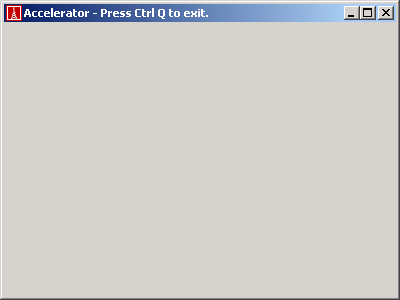

Accelerator sample

Compiling
To compile the example:
- Launch EiffelStudio.
- Select Use existing Ace (control file) and click OK.
- Browse to Eiffel50\examples\vision2\accelerator\.
- Choose Ace.ace
- Choose the directory where the project will be compiled, by default the same directory containing the Ace file.
- Click OK.
Running
After launching the application, you will see a window displayed with a similar appearance to the one above. When the window has the focus, the key combination
Ctrl + Q will exit the application.
Under the Hood
An EV_ACCELERATOR is created and associated with the
EV_TITLED_WINDOW used for the main window of the application.
The association is made by adding the accelerator to the accelerators list of the window.
This sample contains the following class:
See Also
EV_ACCELERATOR
EV_KEY